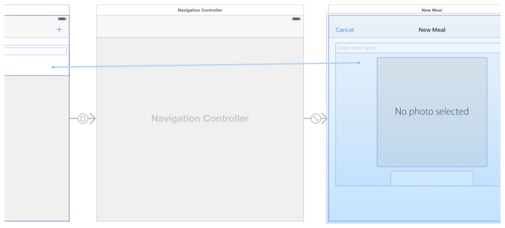
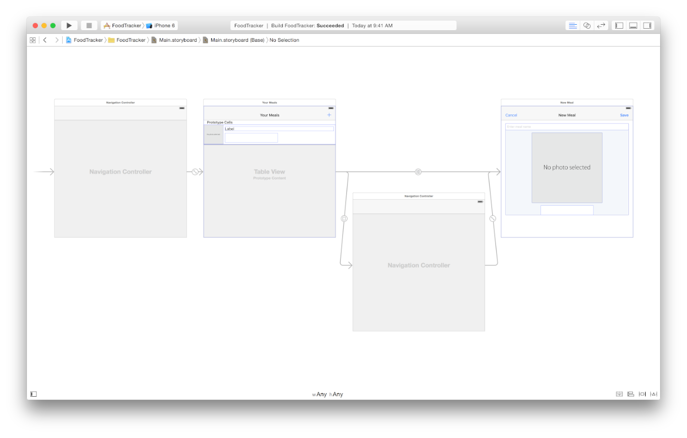
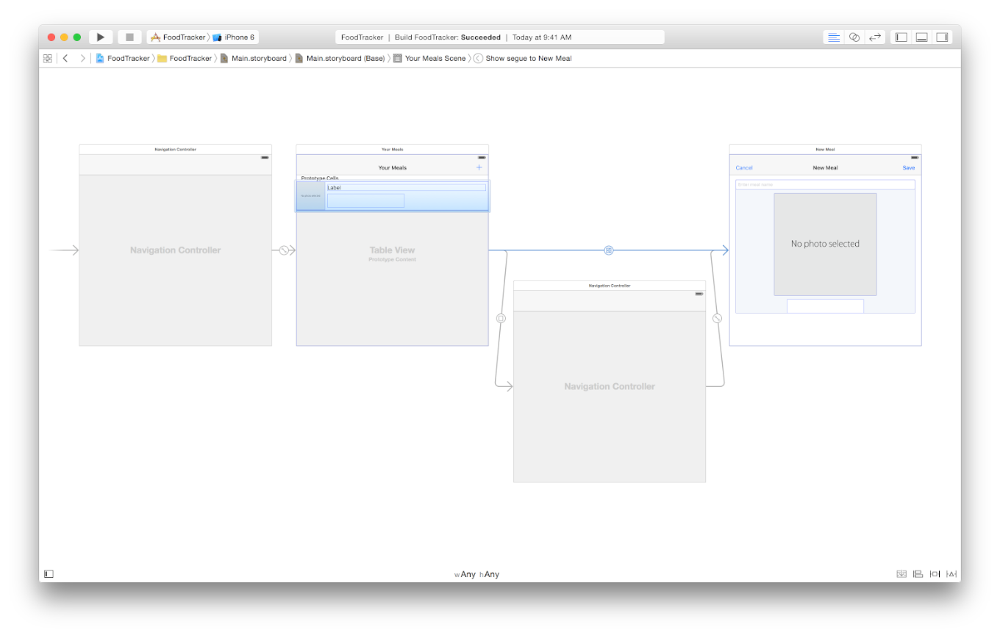
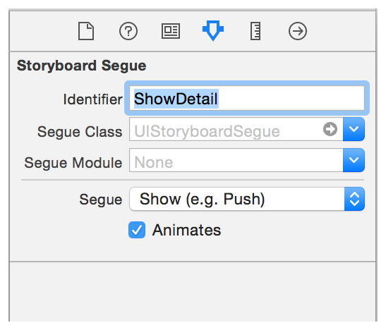
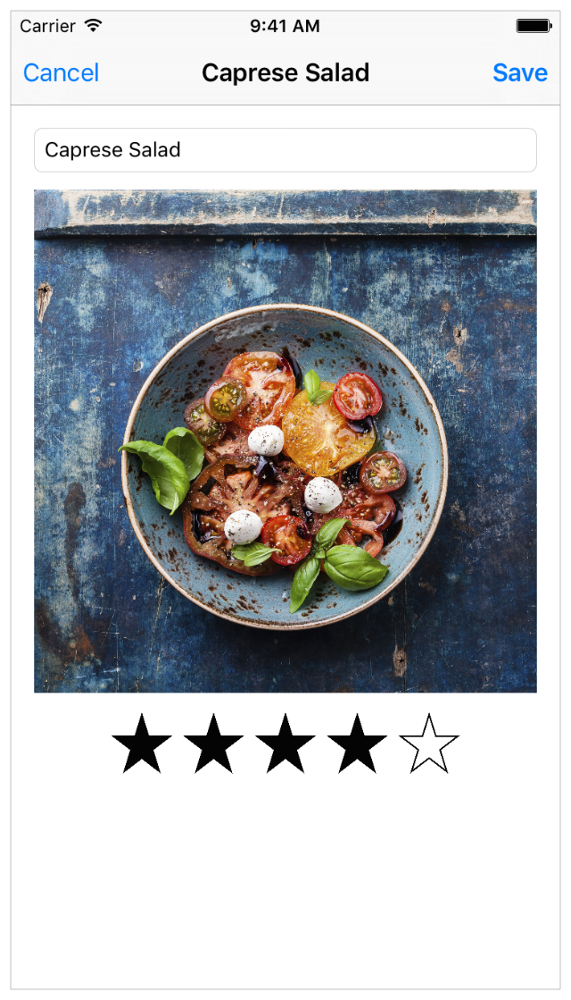
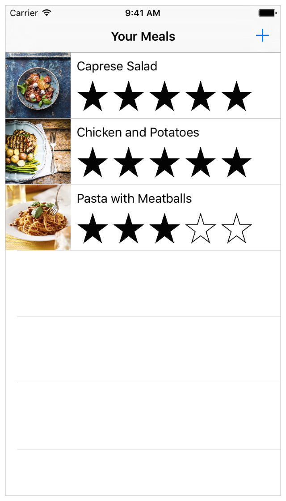
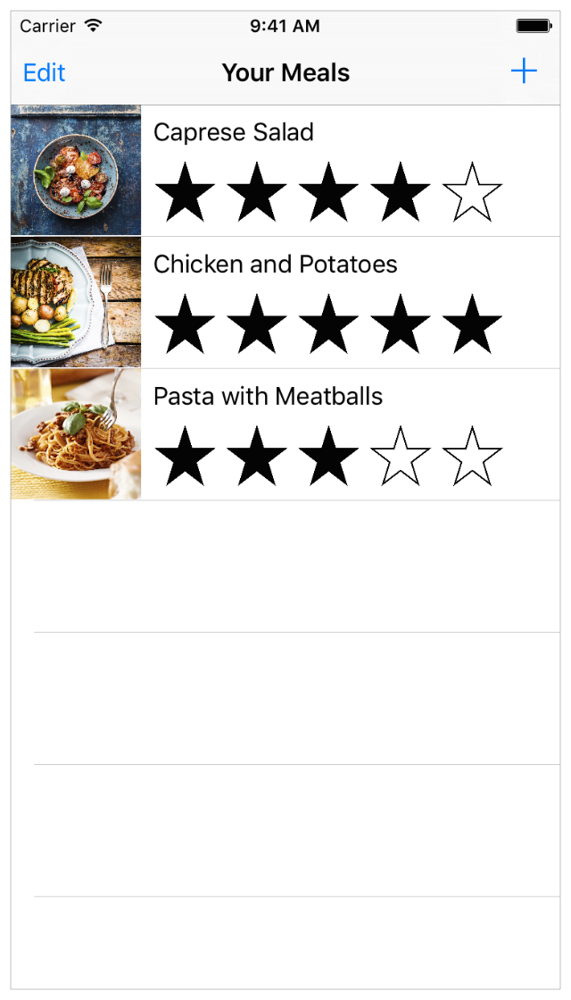

In this lesson, you focus on adding behavior that allows the user to edit and delete meals in the FoodTracker app.
このレッスンでは、あなたは挙動を追加することに集中します、それはユーザにFoodTrackerアプリにおいて食事の編集と削除を可能にするものです。
Learning Objectives
学習する目標
At the end of the lesson, you’ll be able to:
このレッスンの終わりに、あなたが出来るようになるのは：
Differentiate between push and modal navigation
プッシュナビゲーションとモーダルナビゲーションの間の違いがわかる
Dismiss view controllers based on their presentation style
ビューコントローラをそれらの表現形式に基づいて片付ける
Understand when to use different type cast operators for downcasting
ダウンキャストに対して異なった型キャスト演算子を使う時を理解する
Leverage optional binding to check for complex conditions
オプショナル束縛を駆使して、複雑な条件について確認する
Use segue identifiers to determine which segue is occurring
セグエ識別子を使って、どのセグエが現れているか確かめる
Allow Editing of Existing Meals
既存の食事を編集させる
Currently, the FoodTracker app gives users the ability to add a new meal to a list of meals. Next, you’ll want to give users the ability to edit an existing meal.
目下、FoodTrackerアプリは、ユーザに新しい食事を食事リストに加える能力を与えます。次に、あなたは、ユーザに既存の食事を編集する能力を与えます。
You'll enable the user to tap on a meal cell to pull up a version of the meal scene that’s prepopulated with information about a meal. The user makes changes and taps the Save button, which updates the information and overwrites the previous entry in the meal list.
あなたは、ユーザに食事セル（食事リストの１ます）上でタップして、あるバージョンの食事シーン、ある食事についての情報で既に満たされるもの、をプルアップする（引っぱってくる）手段を与えます。ユーザが変更を行って「Save」ボタンをタップします、するとそれは食事リストにおいて情報を更新して以前の登録項目を上書きします。
To configure the table view cell
テーブルビューセルを構成するには
If the assistant editor is open, return to the standard editor by clicking the Standard button.
アシスタントエディタが開いているならば、標準エディタにStandardボタンをクリックすることで戻ってください。
Open your storyboard, Main.storyboard.
あなたのストーリーボード、Main.storyboardを開いてください。
On the canvas, select the table view cell.
キャンバス上で、テーブルビューセルを選択してください。
Control-drag from the table view cell to the meal scene.
そのテーブルビューセルから食事シーンへとコントロール-ドラッグしてください。

A shortcut menu titled Selection Segue appears in the location where the drag ended.
Selection Segue（セグエを選択）とタイトルを付けられるショートカットメニューが、ドラッグが終わったところに現れます。
Choose show from the Selection Segue menu.
showをSelection Segueメニューから選びます。
Drag the navigation controller between the meal list and the meal scene down so you can see the new segue.
ナビゲーションコントローラを食事リストと食事シーンの間でドラッグして引き下げてください、それであなたは新しいセグエを見れます。

If you want, you can zoom out using Command-Minus (-).
あなたが望むならば、あなたはコマンド-マイナス（-）キーを使って表示を縮小することができます。
On the canvas, select the newly added segue.
キャンバス上で、新しく加えられたセグエを選択してください。

In the Attributes inspector, type ShowDetail in the Identifier field. Press Return.
Attributesインスペクタにおいて、ShowDetailをIdentifier（識別子）欄にタイプしてください。リターンキーを押します。

When this segue is triggered, it pushes the view controller for the meal scene onto the same navigation stack as the meal list scene.
このセグエが始動される時、それは食事シーンのビューコントローラを食事シーンリストとして同じナビゲーションスタックにプッシュします（一番上に乗せます）。
Checkpoint: Run your app. In the meal list scene, you should be able to tap a table view cell to navigate to the meal scene, but the content in the scene is blank. When you tap on an existing cell in the table view, you want to edit an existing meal, not create a new one.
確認点：あなたのアプリを実行してください。食事リストシーンにおいて、あなたはテーブルピューセルをタップすることで食事シーンへと導かれることができます、しかしそのシーンのコンテンツは空です。あなたが既存のセルをテーブルビューにおいてタップする時、あなたは既存の食事の編集を望みます、新しいものを造るのではなく。
You now have two segues that go to the same scene, so you need a way to identify when the user is trying to add a new meal or edit an existing one.
あなたは今では同じシーンに行き着く２つのセグエを持ちます、それであなたはユーザが新しい食事の追加または既存のものの編集を試みる時に識別する方法を必要とします。
Recall from earlier that the prepareForSegue(_:sender:) method is called before any segue gets executed. You can use this method to identify which segue is occurring, and display the appropriate information in the meal scene. You’ll differentiate the segues based on the identifiers you assigned to them earlier: AddItem (modal segue) and ShowDetail (show segue).
初めの方を思い出してください、prepareForSegue(_:sender:)メソッドは何らかのセグエが実行される前に呼ばれます。あなたはこのメソッドを使って、どのセグエが生じているのか識別して、適切な情報を食事シーンにおいて表示することができます。あなたは、セグエをあなたがそれらに前もって割り当てた識別子：AddItem（モーダルセグエ）とShowDetail（表示セグエ）に基づいて区別します
To identify which segue is occurring
どのセグエが生じているかを識別するには
Open MealTableViewController.swift.
MealTableViewController.swiftを開いてください。
In MealTableViewController.swift, find and uncomment the prepareForSegue(_:sender:) method. (To uncomment the method, remove the /* and */ characters surrounding it.)
MealTableViewController.swiftにおいて、prepareForSegue(_:sender:)メソッドを見つけてコメントを外してください。（メソッドのコメントを外すには、それを囲んでいる/*と*/文字を削除します。）
After you do that, the template implementation looks like this:
あなたがこれをした後、ひな形実装はこのように見えます：
// MARK: - Navigation
// In a storyboard-based application, you will often want to do a little preparation before navigation （ストーリーボードに基づくアプリケーションにおいて、あなたはしばしばナビゲーションの前に少し準備したいでしょう）
// Get the new view controller using segue.destinationViewController. （新規ビューコントローラをsegue.destinationViewControllerを使って得てください。）
// Pass the selected object to the new view controller. （選択されたオブジェクトを新規ビューコントローラに渡してください。）
}
Because MealTableViewController is a subclass of UITableViewController, the template implementation comes with a skeleton for prepareForSegue(_:sender:).
MealTableViewControllerはUITableViewControllerのサブクラスであるので、ひな形実装はprepareForSegue(_:sender:)のための骨格を備えています。
Delete the two lines of comments, and replace them with this if statement and else clause:
２つのコメント行を削除してください、そしてそれらをif文とelse節で置き換えてください：
ifsegue.identifier == "ShowDetail" {
}
elseifsegue.identifier == "AddItem" {
}
This code compares the segue identifiers against the identifier strings assigned to them earlier.
このコードは、セグエ識別子を前にそれらに割り当てられた識別子文字列と比較します。
In the first if statement (which gets executed if the meal is being edited), add the following code:
最初のif文（それは食事が編集されようとするならば実行されます）において、以下のコードを加えてください：
This code tries to downcast the destination view controller of the segue to a MealViewController using the forced type cast operator (as!). Notice that this operation has an exclamation mark (!) instead of a question mark (?) at the end, like you’ve seen so far with type cast operators. This means that the operator performs a forced type cast. If the cast is successful, the local constant mealDetailViewController gets assigned the value of segue.destinationViewController cast as type MealViewController. If the cast is unsuccessful, the app should crash at runtime.
このコードは、セグエのデスティネーション（行先）ビューコントローラをMealViewControllerへとダウンキャストすることを強制型キャスト演算子（as!）を使って試みます。注目することは、この演算子が感嘆符（!）をその終わりに持つことです、あなたがこれまで型キャスト演算子で見たように疑問符（?）ではなく。これは、この演算子が強制型キャストを行うことを意味します。このキャストが成功するならば、ローカル定数mealDetailViewControllerは、型MealViewControllerにキャストしたsegue.destinationViewControllerの値を割り当てられます。キャストが失敗するならば、アプリは実行時にクラッシュします。
Only use a forced cast if you’re absolutely certain that the cast will succeed—and that if it fails, something has gone wrong in the app and it should crash. Otherwise, downcast using as?.
強制キャストを使用するのは、あなたがそのキャストが成功するのを絶対に確信する—しかもそれが失敗するならば、何かがあなたのアプリでおかしくなっていてそれはクラッシュすべきである場合のみにしてください。そうでなければ、as?を使ってダウンキャストしてください。
Below the previous line, add another if statement (nested inside the first one):
以前の行の下で、もう１つのif文を加えてください（最初のものの内部に入れ子にされる）：
// Get the cell that generated this segue. （このセグエで生成されたセルを得る）
This code tries to downcast sender to a MealCell using the optional type cast operator (as?). If the cast is successful, the local constant selectedMealCell gets assigned the value of sender cast as type MealTableViewCell, and the if statement proceeds to execute. If the cast is unsuccessful, the expression evaluates to nil and the if statement isn’t executed.
このコードは、senderをMealCellへとダウンキャストすることをオプショナル型キャスト演算子（as?）を使って試みます。キャストが成功するならば、ローカル定数selectedMealCellは型MealTableViewCellにキャストしたsenderの値を割り当てられます、そしてif文は実行を続けます。キャストが失敗したならば、式はnilに評価されてif文は実行されません。
Inside the if statement, add this code:
if文の内側に、このコードを加えてください：
This code fetches the Meal object corresponding to the selected cell in the table view. It then assigns that Meal object to the meal property of the destination view controller, an instance of MealViewController. (You’ll configure MealViewController to display the information from its meal property when it loads.)
このコードは、テーブルビューにおいて選択されたセルに対応するMealオブジェクトを取ってきます。それはそれからそのMealオブジェクトを、MealViewControllerのインスタンスのひとつ、デスティネーション（行先）ビューコントローラのmealプロパティに割り当てます。（あなたはMealViewControllerを構成して、それのmealプロパティからの情報をそれがロードされるとき表示します。）
Inside the else clause you added earlier, add this print statement:
あなたが前に加えたelse節の内側に、このprint文を加えてください
print("Adding new meal.")
Although you don’t need to do anything in this method if you’re adding a new meal instead of editing an existing one, it’s useful to log what’s going on.
あなたが新しい食事を加えていて既存のものを編集するのではないならば、あなたはこのメソッドにおいて何もする必要がないけれども、それは何が起こっているか記録するのに便利です。
Your prepareForSegue(_:sender:) method should look something like this:
あなたのprepareForSegue(_:sender:)メソッドはこのようなものに見えるはずです：
Now that you have the logic implemented, you need to do a small amount of work in MealViewController.swift to make sure the UI updates correctly. Specifically, when an instance of MealViewController (the meal scene) gets created, its views should be populated with data from its meal property, if that data exists. Recall that the appropriate place to do this type of setup work is in the viewDidLoad() method.
あなたがロジックを実装した今では、あなたが必要とするのはMealViewController.swiftで少しばかり作業してUIが正しく更新されるよう手配することです。具体的には、MealViewControllerのインスタンス（食事シーン）が作成されるとき、それのビューは、それのmealプロパティからのデータで満たされるべきです、そのデータが存在するならば。思い出してください、この種の設定作業に適切な場所は、viewDidLoad()メソッドの中です。
To update the implementation of viewDidLoad
viewDidLoadの実装を更新するには
Open MealViewController.swift.
MealViewController.swiftを開いてください。
In MealViewController.swift, find the viewDidLoad() method.
MealViewController.swiftにおいて、viewDidLoad()メソッドを見つけてください。
overridefuncviewDidLoad() {
super.viewDidLoad()
// Handle the text field’s user input via delegate callbacks. （テキスト欄のユーザ入力を委任先コールバック経由で取り扱う）
nameTextField.delegate = self
// Enable the Save button only if the text field has a valid Meal name. （Saveボタンをテキスト欄が有効なMeal名を持つ場合にのみ使用可能にする）
checkValidMealName()
}
Below the nameTextField.delegate line, add this code:
nameTextField.delegate行の下で、このコードを加えてください：
// Set up views if editing an existing Meal. （既存のMealを編集するならばビューを準備する）
ifletmeal = meal {
navigationItem.title = meal.name
nameTextField.text = meal.name
photoImageView.image = meal.photo
ratingControl.rating = meal.rating
}
This code sets each of the views in MealViewController to display data from the meal property if the meal property is non-nil, which happens only when an existing meal is being edited.
このコードは、MealViewControllerの中の各ビューを設定して、mealプロパティからのデータをそのmealプロパティが非nilならば表示します、それは既存の食事が編集される時のみ起こります。
Your viewDidLoad() method should look something like this:
あなたのviewDidLoad()メソッドはこのようにものに見えるはずです：
overridefuncviewDidLoad() {
super.viewDidLoad()
// Handle the text field’s user input via delegate callbacks. （テキスト欄のユーザ入力を委任先コールバック経由で取り扱う）
nameTextField.delegate = self
// Set up views if editing an existing Meal. （既存のMealを編集するならばビューを準備する）
ifletmeal = meal {
navigationItem.title = meal.name
nameTextField.text = meal.name
photoImageView.image = meal.photo
ratingControl.rating = meal.rating
}
// Enable the Save button only if the text field has a valid Meal name. （Saveボタンをテキスト欄が有効なMeal名を持つ場合にのみ使用可能にする）
checkValidMealName()
}
Checkpoint: Run your app. You should be able to click a table view cell to navigate to the meal scene, and see it prepopulated with data about the meal. But if you click Save, instead of overwriting the existing meal, the app adds a new meal. You’ll work on getting the right behavior for this next.
確認点：あなたのアプリを実行してください。あなたはテーブルピューセルをクリックして食事シーンに導かれます、そしてそれがその食事についてのデータで満たされるのを見るはずです。しかしあなたがSaveをクリックするならば、既存の食事を上書きする代わりに、アプリは新しい食事を加えます。次にあなたは、これに対する正しい挙動を得る作業をします。

To overwrite an existing meal in the meal list, you’ll need to update the unwindToMealList(_:) action method to handle the two different cases. In one case, you need to add a new meal, and in the other, you need to replace an existing one. Recall that this method is only called when a user taps the Save button, so you don’t need to account for the Cancel button in this method.
食事リストの中の既存の食事を上書きするには、あなたはunwindToMealList(_:)アクションメソッドを更新して２つの異なる場合を取り扱うようにする必要があります。一方の場合では、あなたは新しい食事を追加する必要があります、そして他方では、あなたは既存のものを置き換える必要があります。思い出してください、このメソッドはユーザがSaveボタンをタップした時のみ呼ばれます、それであなたはCancelボタンをこのメソッドにおいて考慮する必要はありません。
To update the implementation of unwindToMealList(_:) to add or replace meals
unwindToMealList(_:)の実装を更新して、食事を加えたり置き換えたりするには
Open MealTableViewController.swift.
MealTableViewController.swiftを開いてください。
In MealTableViewController.swift, find the unwindToMealList(_:) method.
MealTableViewController.swiftにおいて、unwindToMealList(_:)メソッドを見つけてください。
This code checks whether a row in the table view is selected. If it is, that means a user tapped one of the table views cells to edit a meal. In other words, this if statement gets executed if an existing meal is being edited.
このコードは、テーブルビューの中のある行が選択されるかどうかを調べます。それがそうならば、ユーザがテーブルビューセルの１つをタップして、ある食事を編集することを意味します。言い換えれば、このif文は、既存の食事が編集されるならば実行されます。
In this if statement, add the following code:
このif文において、以下のコードを加えてください：
The first line updates the appropriate entry in meals to store the updated meal information. The second line reloads the appropriate row in the table view to display the changed data.
最初の行は、mealsの中の適切な登録項目を更新して、更新された食事情報を格納します。２行目は、テーブルビューの中の適切な行を再読み込みして、変更されたデータを表示します。
After the if statement, add an else clause and wrap it around the last four lines in the method, like this:
if文の後で、else節を加えて、このメソッドの最後の4行をそれで包んでください、このように：
You can make sure the lines in the else clause are indented properly by selecting all of them and pressing Control-I.
あなたは、else節の中の行が適切に字下げされるようにすることが、それら全部を選択してコントロール-lを押すことで確実に行えます。
The else clause executes when there’s no selected row in the table view, which means a user tapped the Add button to get to the meal scene. In other words, this else statement gets executed if a new meal is being added.
else節は、テーブルピューの中に選択された行がない場合に実行されます、そしてそれはユーザがAddボタンをタップして食事シーンに行ったことを意味します。言い換えれば、このelse文は新しい食事が加えられる場合に実行されます。
Your unwindToMealList(_:) action method should look like this:
あなたのunwindToMealList(_:)アクションメソッドはこのように見えるはずです：
Checkpoint: Run your app. You should be able to click a table view cell to navigate to the meal scene, and see it prepopulated with data about the meal. If you click Save, the changes you made should overwrite the existing meal in the list.
確認点：あなたのアプリを実行してください。あなたはテーブルピューセルをクリックして食事シーンに導かれます、そしてそれがその食事についてのデータで満たされるのを見るはずです。あなたがSaveをクリックするならば、あなたがした変更は、そのリストの既存の食事を上書きするはずです。

Cancel an Edit to an Existing Meal
既存の食事への編集のキャンセル
A user might decide not to keep edits to a meal, and want to return to the meal list without saving any changes. For this, you’ll update the behavior of the Cancel button to dismiss the scene appropriately.
ユーザは、ある食事に対する変更を残すことを止めようと決心するかもしれません、そして何ら変更を保存せずに食事リストに戻りたいかもしれません。このために、あなたはCancelボタンの挙動を更新して、そのシーンを適切に忘れ去られるようにします。
The type of dismissal depends on the type of presentation. You’ll implement a check that determines how the current scene was presented when the user taps the Cancel button. If it was presented modally (using the Add button), it’ll be dismissed using dismissViewControllerAnimated(_:completion:). If it was presented with push navigation (using a table view cell), it will be dismissed by the navigation controller that presented it.
却下の種類は、表現の種類によって決まります。あなたはある検査を実装して、現在のシーンが表現された方法をユーザがCancelボタンをタップする時に特定します。それがモーダル的に表されたならば（Addボタンを使って）、それはdismissViewControllerAnimated(_:completion:)を使って却下されます。それがプッシュナビゲーションで表されたならば（テーブルピューセルを使って）、それはそれを表したナビゲーションコントローラによって却下されます。
To change the implementation of the cancel action
キャンセルアクションの実装を変更するには
Open MealViewController.swift.
MealViewController.swiftを開いてください。
In MealViewController.swift, find the cancel(_:) action method.
MealViewController.swiftにおいて、cancel(_:)アクションメソッドを見つけてください。
This implementation is only using the dismissViewControllerAnimated to dismiss the meal scene because you’ve only had to account for the Add button so far.
この実装は、ただdismissViewControllerAnimatedのみを使って食事シーンを却下します、なぜならあなたは今までのところAddボタンだけを考慮すれば良いからです。
In the cancel(_:) action method, before the existing line of code, add the following code:
cancel(_:)アクションメソッドにおいて、既存のコード行の前で、以下のコード加えてください：
// Depending on style of presentation (modal or push presentation), this view controller needs to be dismissed in two different ways. （表現の流儀（モーダルまたはプッシュ表現）に依存して、このビューコントローラは２つの異なる方法で却下される必要があります。）
This creates a Boolean value that indicates whether the view controller that presented this scene is of type UINavigationController. As the constant name isPresentingInAddMealMode indicates, this means that the meal scene was presented using the Add button. This is because the meal scene is embedded in its own navigation controller when it’s presented in this manner, which means that navigation controller is what presents it.
これはあるブール値を作成します、それはこのシーンを表したビューコントローラが型UINavigationControllerであるかどうかを示します。定数名isPresentingInAddMealModeが示すように、これはその食事シーンがAddボタンを使って表されたことを意味します。食事シーンがこのやり方で表現される時それ独自のナビゲーションコントローラに埋め込まれることから、それは、ナビゲーションコントローラがそれを表すものであるのを意味します。
After the line you just added, add the following if statement, and move the line that calls dismissViewControllerAnimated inside of it:
あなたが加えだばかりの行の後で、以下のif文を加えてください、そしてdismissViewControllerAnimatedを呼び出している行をそれの内側に移動してください：
Whereas before, the call to dismissViewControllerAnimated happened anytime the cancel(_:) method got called, it now only happens when isPresentingInAddMealMode is true.
前の、dismissViewControllerAnimatedに対する呼び出しがcancel(_:)メソッドが呼び出される時はいつでも起こるのとは反対に、それは今ではisPresentingInAddMealModeがtrueの時にだけ起こります。
Right after the if statement, add this else clause:
if文のすぐ後で、else節を加えてください：
This is now an if statement with an else clause that executes the code within the if statement only when isPresentingInAddMealMode is true, and executes the code within the else clause otherwise.
これは今ではelse節を持つif文です、それはif文の内部のコードをisPresentingInAddMealModeがtrueである時のみ実行します、そしてそれ以外ではelse節の内部のコードを実行します。
The else clause gets executed when the meal scene was pushed onto the navigation stack on top of the meal list scene. The code within the else clause executes a method called popViewControllerAnimated, which pops the current view controller (meal scene) off the navigation stack of navigationController and performs an animation of the transition.
else節が実行されるのは、食事シーンがナビゲーションスタック上へと、食事リストシーンの上に、プッシュされた時です。else節の内部のコードはpopViewControllerAnimatedと呼ばれるメソッドを実行します、それは現在のビューコントローラ（食事シーン）をnavigationControllerのナビゲーションスタックからポップして（取り出して）、転換アニメーションを実行します。
Your cancel(_:) action method should look like this:
あなたのcancel(_:)アクションメソッドはこのように見えるはずです：
@IBActionfunccancel(sender: UIBarButtonItem) {
// Depending on style of presentation (modal or push presentation), this view controller needs to be dismissed in two different ways. （表現の流儀（モーダルまたはプッシュ表現）に依存して、このビューコントローラは２つの異なる方法で却下される必要があります。）
Checkpoint: Run your app. Now when you click the Add button (+) and click Cancel instead of Save, you should navigate back to the meal list without adding a new meal.
確認点：あなたのアプリを実行してください。今ではあなたがAddボタン（+）をクリックしてCancelボタンをSaveボタンの代わりにクリックした時、あなたは新しい食事を追加することなく食事リストに導かれて戻ります。
Support Deleting Meals
食事の削除のサポート
Next, you’ll want to give users the ability to delete a meal from the meal list. You need a way to let users put the table view into an editing mode from which they can delete cells. You accomplish this by adding an Edit button to the table view’s navigation bar.
次に、あなたは食事リストからある食事を削除する能力をユーザに与えようと思います。あなたの必要なのは、ユーザにテーブルビューを編集モードの状態へ置かせることです、それによって彼らはセルを削除できます。あなたは、これをEditボタンをテーブルビューのナビゲーションバーに追加することによって成し遂げます。
To add an Edit button to the table view
Editボタンをテーブルビューに加えるには
Open MealTableViewController.swift.
MealTableViewController.swiftを開いてください。
In MealTableViewController.swift, find the viewDidLoad() method.
MealTableViewController.swiftにおいて、viewDidLoad()メソッドを見つけてください。
overridefuncviewDidLoad() {
super.viewDidLoad()
// Load the sample data. （見本データをロードする）
loadSampleMeals()
}
Below the super.viewDidLoad() line, add the following line of code:
super.viewDidLoad()行の下で、以下のコード行を加えてください：
// Use the edit button item provided by the table view controller. （テーブルビューコントローラによって提供される編集ボタン項目を使う）
This creates a special type of bar button item that has editing behavior built into it. It then adds this button to the left side of the navigation bar in the meal list scene.
これは、それに組み込まれた編集挙動を持つ特別な型のバーボタン項目を作成します。それはそれからこのボタンを食事リストシーンにおいてナビゲーションバーの左側に加えます。
Your viewDidLoad() method should look something like this:
あなたのviewDidLoad()メソッドはこのようにものに見えるはずです：
overridefuncviewDidLoad() {
super.viewDidLoad()
// Use the edit button item provided by the table view controller. （テーブルビューコントローラによって提供される編集ボタン項目を使う）
Checkpoint: Run your app. Notice there’s an Edit button on the left of the table view’s navigation bar. If you click the Edit button, the table view goes into editing mode—but you won’t be able to delete cells yet, because you haven’t implemented that.
確認点：あなたのアプリを実行してください。Editボタンがテーブルビューのナビケーションバーの左にあることに注目してください。あなたがこのEditボタンをクリックするならば、テーブルビューは編集モードにはいります—しかしあなたはまだセルを削除することができません、なぜならあなたがそれを実装していないからです。

To perform any sort of editing on a table view, you need to implement one of its delegate methods, tableView(_:commitEditingStyle:forRowAtIndexPath:). This delegate method is in charge of managing the table rows when it’s in editing mode.
何らかの種類の編集をテーブルビュー上で行うために、あなたが必要とするのは、それの委任先メソッドの１つ、tableView(_:commitEditingStyle:forRowAtIndexPath:)を実装することです。この委任先メソッドは、テーブル行の管理を、それが編集モードの時に託すものです。
You also need to uncomment the implementation of tableView(_:canEditRowAtIndexPath:) to support editing.
あなたはまた、編集をサポートするようにtableView(_:canEditRowAtIndexPath:)の実装のコメントを外す必要があります。
To delete a meal
ある食事を削除するには
In MealTableViewController.swift, find and uncomment the tableView(_:commitEditingStyle:forRowAtIndexPath:) method. (To uncomment the method, remove the /* and */ characters surrounding it.)
MealTableViewController.swiftにおいて、tableView(_:commitEditingStyle:forRowAtIndexPath:)メソッドを見つけてコメントを外してください。（メソッドのコメントを外すには、それを囲んでいる/*と*/文字を削除します。）
After you do that, the template implementation looks like this:
あなたがこれをした後、ひな形実装はこのように見えます：
// Override to support editing the table view. （テーブルビューの編集をサポートするためにオーバーライドする。）
// Create a new instance of the appropriate class, insert it into the array, and add a new row to the table view （適切なクラスの新規インスタンスを作成して、それを配列に挿入し、そして新しい行をテーブルビューに加える）
}
}
Below the comment that says // Delete the row from the data source, add the following line of code:
// Delete the row from the data sourceと述べているコメントの下で、以下のコード行を加えてください：
meals.removeAtIndex(indexPath.row)
This code removes the Meal object to be deleted from meals. The line after it, which is part of the template implementation, deletes the corresponding row from the table view.
このコードは、Mealオブジェクトを削除して、mealsから消去されるようにします。それの後の行、ひな形実装の一部であるものは、対応する行をテーブルビューから消去します。
In MealTableViewController.swift, find and uncomment the tableView(_:canEditRowAtIndexPath:) method.
MealTableViewController.swiftにおいて、tableView(_:canEditRowAtIndexPath:)メソッドを見つけてコメントを外してください。
After you do that, the template implementation looks like this:
あなたがこれをした後、ひな形実装はこのように見えます：
// Override to support conditional editing of the table view. （テーブルビューの条件付きの編集をサポートするためにオーバーライドする。）
// Return false if you do not want the specified item to be editable. （指定した項目が編集されるのをあなたが望まないならばfalseを返してください。）
returntrue
}
Your tableView(_:commitEditingStyle:forRowAtIndexPath:) method should look like this:
あなたのtableView(_:commitEditingStyle:forRowAtIndexPath:)メソッドはこのように見えるはずです：
// Override to support editing the table view. （テーブルビューの編集をサポートするためにオーバーライドする。）
// Create a new instance of the appropriate class, insert it into the array, and add a new row to the table view （適切なクラスの新規インスタンスを作成して、それを配列に挿入し、そして新しい行をテーブルビューに加える）
}
}
Checkpoint: Run your app. If you click the Edit button, the table view goes into editing mode. You can choose a cell to delete by clicking the indicator on the left, and confirm that you want to delete it by pressing the Delete button in that cell. Alternatively, swipe left on a cell to expose the Delete button quickly; this behavior is built into table views. When you click the Delete button for a cell, the cell is removed from the list.
確認点：あなたのアプリを実行してください。あなたがEditボタンをクリックするならば、テーブルビューは編集モードになります。あなたは、削除するセルを左の表示をクリックして選べます、そしてそのセルにおいてDeleteボタンを押すことであなたがそれの削除を望むのを確認します。その代わりに、あるセル上でスワイプして、Deleteボタンを素早く露出してください；この挙動は、テーブルビューに組み込まれます。あなたがあるセルに対してDeleteボタンをクリックする時、そのセルはリストから取り除かれます。